Repair Procedures
Inspection
Speedometer
1. Adjust the pressure of the tires to the specified level.
2. Drive the vehicle onto a speedometer tester. Use wheel chocks (A) as appropriate.
3. Check if the speedometer indicator range is within the standard values.
CAUTION:
Do not operate the clutch suddenly or increase/ decrease speed rapidly while testing.
NOTE:
Tire wear and tire over or under inflation will increase the indication error.
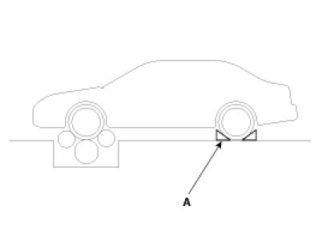
[Canada - km/h]
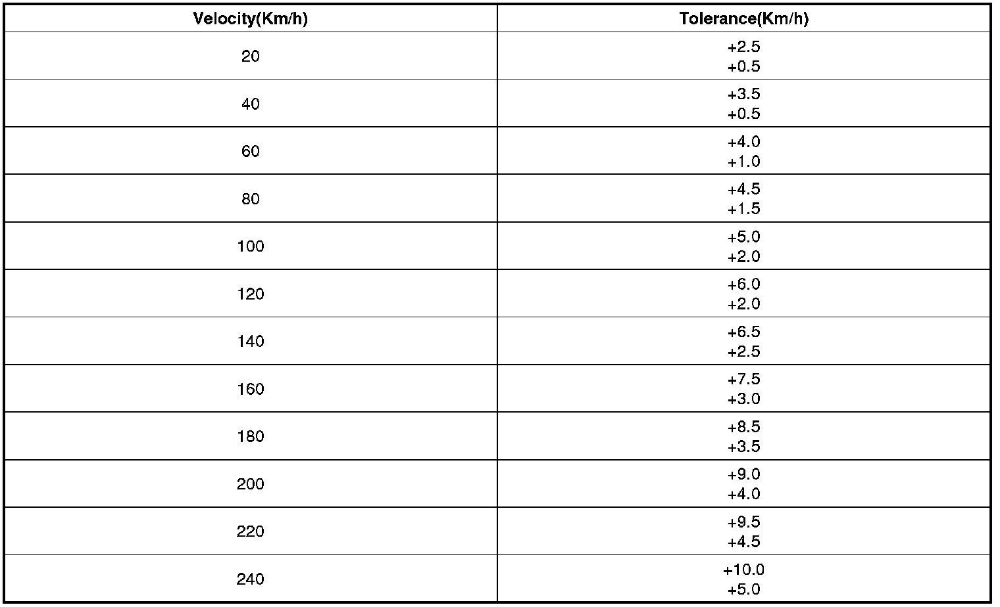
[USA-mph]
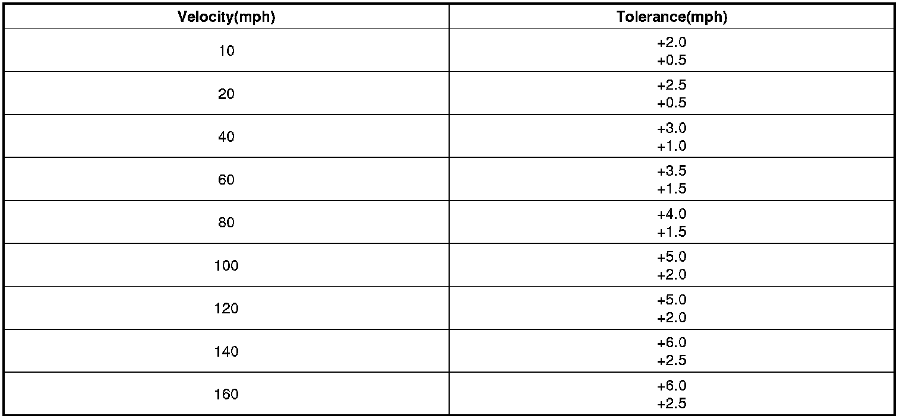
Tachometer
1. Connect the GDS to the diagnostic link connector or install a tachometer.
2. With the engine started, compare the readings of the tester with that of the tachometer. Replace the tachometer if the tolerance is exceeded.
CAUTION:
1. Reversing the connections of the tachometer will damage the transistor and diodes inside.
2. When removing or installing the tachometer, be careful not to drop it or subject it to severe shock.
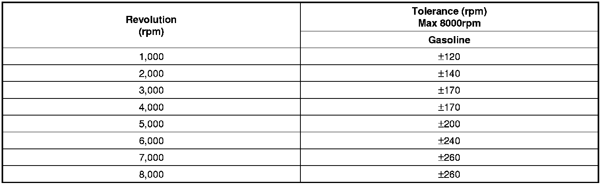
Fuel Gauge
1. Disconnect the fuel sender connector from the fuel sender.
2. Connect a 3.4 watt, 12V test bulb to terminals 1 and 3 on the wire harness side connector.
3. Turn the ignition switch to the ON, and then check that the bulb lights up and the fuel gauge needle moves to full.
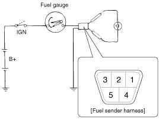
Main Fuel Gauge Sender
1. Using an ohmmeter, measure the resistance between terminals 1 and 3 of sender connector (A) at each float level.
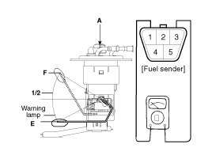
2. Also check that the resistance changes smoothly when the float is moved from "E" to "F"
[General]
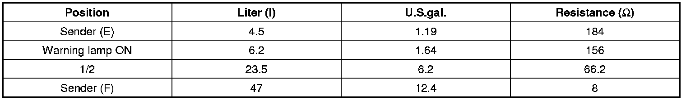
[Supervision]
3. If the height resistance is unsatisfied, replace the fuel sender as an assembly.
CAUTION:
After completing this test, wipe the sender dry and reinstall it in the fuel tank.
Brake Fluid Level Warning Switch
1. Remove the connector (A) from the switch located at the brake fluid reservoir.
2. Verify that continuity exists between switch terminals 1 and 2 while pressing the switch (float) down with a rod.
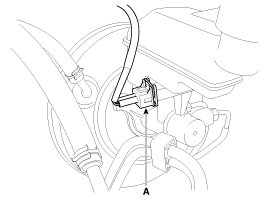
Brake Fluid Level Warning Lamp
1. Ignition "ON"
2. Release the parking brake.
3. Remove the connector from the brake fluid level warning switch.
4. Ground the connector at the harness side.
5. Verify that the warning lamp lights.
Parking Brake Switch
The parking brake switch (A) is a pulling type. It is located under the parking brake lever. To adjust, move the switch mount up and down with the parking brake lever released all the way.
1. Check that there is continuity between the terminal and switch body with the switch ON (Lever is pulled).
2. Check that there is no continuity between the terminal and switch body with the switch OFF (Lever is released).
If continuity is not as specified, replace the switch or inspect its ground connection.
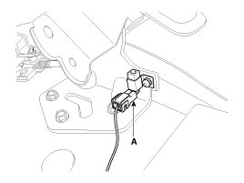
Door Switch
Remove the door switch and check for continuity between the terminals.
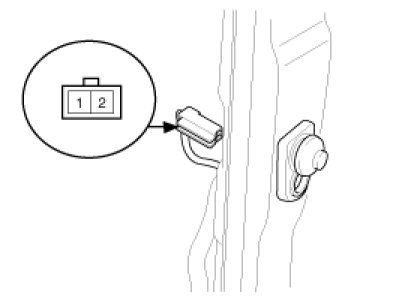

Seat Belt Switch
1. Remove the connector from the switch.
2. Check for continuity between terminals.
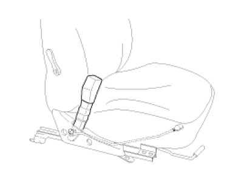
Seat Belt Warning Lamp
With the ignition switch turned ON, verify that the lamp glows.
Removal
1. Disconnect the negative (-) battery terminal.
2. Remove the cluster fascia upper panel (A).
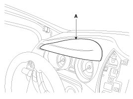
3. Remove the upper shroud(A) with moving down the steering wheel.
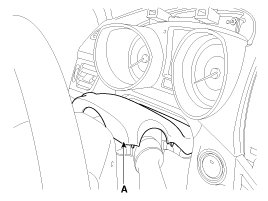
4. Remove the cluster(A) after loosening 4 screws and disconnecting connector(B).
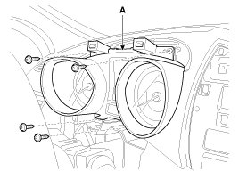
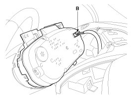
Installation
1. Install the cluster to the crash pad.
2. Install the shroud.
3. Install the cluster fascia upper panel.